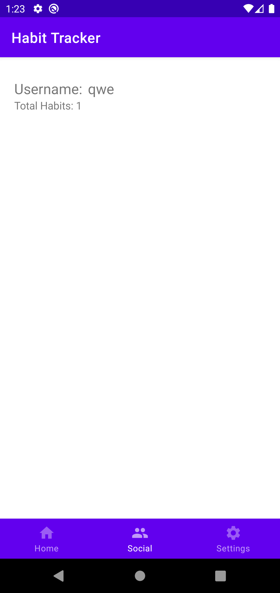
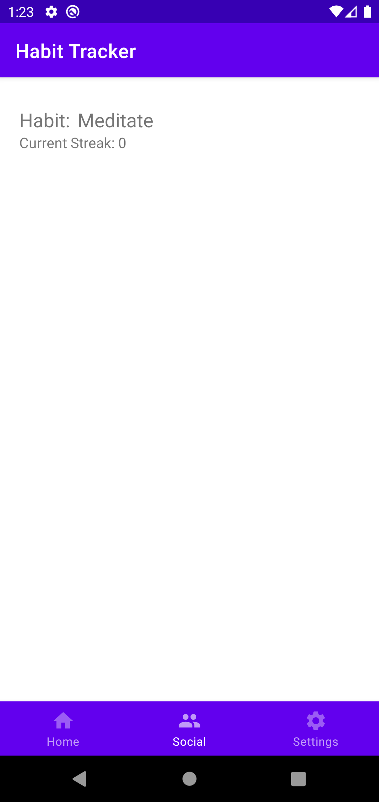
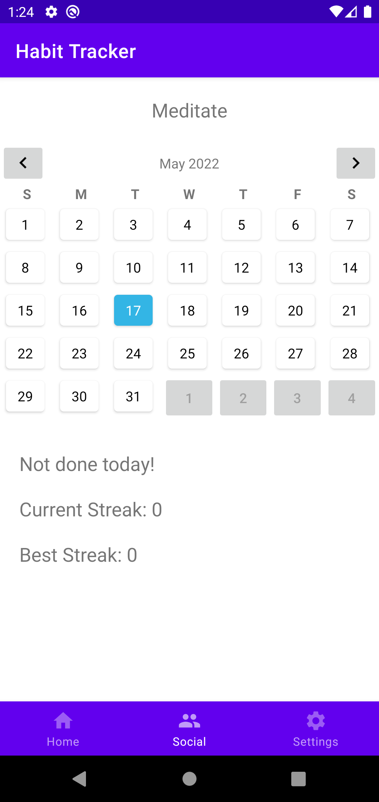

Social
User List

- Here the user can see all users who have set their profile to public.
- The user can tap the user to then view their list of habits.
- The user can navigate to the home and settings page using the bottom navigation bar.
Habit List

- Here the user can see all the habits of the user they tapped on.
- Tapping on a habit allows the user to see more details of that habit.
View Habit

- Here the user can see the details of that user's habit.
- There is a calendar which allows the user to see what days the habit has been done. Blue indicates today and green indicates a day the habit was done.
- The user can also see details about the streaks of the habit.